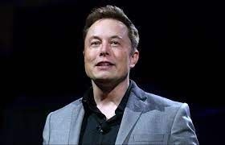

TIMELINE
June 28, 1971
Elon musk was born in south Africa
Zip2
In 1995, Musk, his brother Kimbal, and Greg Kouri founded web software company Zip2 with funds from angel investors. They housed the venture at a small rented office in Palo Alto. The company developed and marketed an Internet city guide for the newspaper publishing industry, with maps, directions, and yellow pages.
X.com and PayPal
In 1999, Musk co-founded X.com, an online financial services and e-mail payment company. The startup was one of the first online banks to be federally insured, and, within its initial months, over 200,000 customers joined the service. The company's investors saw Musk as inexperienced and had him replaced with Intuit CEO Bill Harris by the end of the year. The following year, X.com merged with online bank Confinity to prevent unnecessary competition.
SpaceX
In 2001, Musk conceived Mars Oasis: a concept to build a miniature greenhouse on Mars that would try to grow food crops and reawaken public interest in space exploration.[66][67] In October 2001, Musk traveled with a group to Moscow to buy refurbished Intercontinental ballistic missiles (ICBMs) that could send the greenhouse payloads into space.
Tesla
Tesla, Inc. (originally Tesla Motors) was incorporated in July 2003 by Martin Eberhard and Marc Tarpenning, who financed the company until the Series A round of funding.[86] Both men played active roles in the company's early development prior to Musk's involvement.[87] Musk led the Series A round of investment in 2004, joining Tesla's board of directors as its chairman.
Solar city
Musk provided the initial concept and financial capital for SolarCity, which his cousins Lyndon and Peter Rive co-founded in 2006.[125] By 2013, SolarCity was the second largest provider of solar power systems in the United States.[126] In 2014, Musk committed to building a SolarCity advanced production facility in Buffalo, New York, triple the size of the largest solar plant in the United States.[127] Construction on the factory started in 2014 and was completed in 2017.
| IN A NUTSHELL

|
|
|---|---|
| Born | Elon Reeve Musk
June 28, 1971 (age 49) Pretoria, South Africa |
| Occupation | Entrepreneur industrial designer engineer |
| Parents |
Errol Musk (father) Maye Musk (mother) |